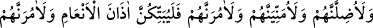
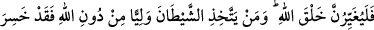
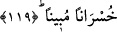

gönderilecekleri seçip çıkar.” buyurur. Âdem (a.s.): “Cehenneme gönderilecekler ne
kadar?” der. Allah Teâlâ: “Her bin kişiden dokuz yüz doksan dokuzudur.” buyurur.
Rasûlullah (a.s.) sözüne devamla “İşte o vakit çocuğun başının ağardığı ve her
hâmilenin taşıdığı yavrusunu düşürdüğü zamandır.” buyurmuştur. Bu iki husus kıyâmetin
korkularının ne kadar şiddetli olduğundan kinâyedir. Nitekim âyette şöyle buyrulmuştur:
“İnsanları” korkudan “sarhoş bir halde görürsün. Oysa onlar sarhoş değillerdir.
Fakat Allah’ın azâbı çok dehşetlidir.” (Hacc, 21/2)
Râvînin dediğine göre bu durum ashâba çok ağır geldi ve Peygamber (s.a.v.)’e:
Hangimiz, bu bin kişiden kalan bir kişidir?” dediler. Rasûlullah (s.a.v) şöyle cevap
verdi: “Sevinin, çünkü Ye’cûc ve Me’cûc bu bindir, binin içindeki (kurtulan) bir kişi
ise sizden bir kişi olacak.” (Bu hitap sahabe ve diğer mü’minler içindir.) Daha sonra
Rasûlullah (s.a.v.) şöyle buyurdu: “Nefsimi kudret elinde tutan Allah’a yemîn ederim
ki ben, sizin cennet ehlinin dörtte biri olmanızı temennî ederim.” Râvî der ki: “Biz de
Allah’a hamdedip tekbir getirdik.” Rasûlullah (s.a.v): “Nefsimi kudret elinde tutan
Allah’a yemin ederim ki ben sizin cennet ehlinin üçte biri olmanızı umuyorum.”
buyurdu. Biz de Allah’a hamdettik ve tekbir getirdik. Rasûlullah (s.a.v.) şöyle devam
etti: “Nefsimi kudret elinde tutan Allah’a yemin ederim ki ben, sizin cennet ehlinin
yarısı olmanızı umarım.” Başka bir hadiste de Rasûlullah yarımdan üçte ikiye
çıkararak şöyle buyurmuştur: “Cennet ehli yüz yirmi sınıf olup bu ümmet, onların
seksen sınıfını teşkil edecektir. Sizin (kâfir) ümmetler arasındaki durumunuz, siyah
öküzün sırtındaki beyaz kıl misalidir.”[156] Hattâ bütün mü’minler de cennete
girebilirler. Bu, uzak değildir.
Eğer “İblis Allah’ın kullarından pay alacağını nasıl bildi” diye sorulursa, buna
değişik cevaplar verilmiştir: Ya Allah Teâlâ İblis’e: “Andolsun ki cehennemi hem
cinlerden hem insanlardan bir kısmıyla dolduracağım.” (Secde, 32/13)
buyurduğunda İblis, Âdem (a.s.)’ın zürriyetinden temennî ettiği miktara ulaşacağını
anladı. Ya da İblis, Âdem (a.s.)’a vesvese vererek yasak meyveyi yedirip isteğine nail
olmuştu, bunu zürriyetinden de umuyordu. Yahut da İblis cenneti ve cehennemi bizzat
gördüğünde, onların insanlardan da sakinleri olacağını anlamıştı.
119- «Onları mutlaka saptıracağım, muhakkak onları boş kuruntulara boğacağım,
kesinlikle onlara emredeceğim de hayvanların kulaklarını yaracaklar (putlar için
nişanlayacaklar),
şüphesiz
onlara
emredeceğim
de
Allah’ın
yarattığını